187 PDF procesados · 186 con cambios · salida en assets/descargas_actualizados/ ·
informe completo en INFORME_REBRANDING.md
generales/catalogo-general-2026.pdf · pagina 1
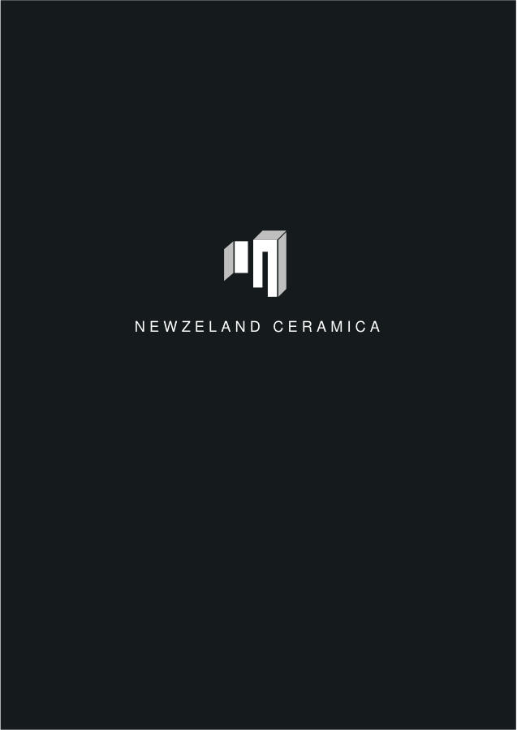
generales/catalogo-general-2026.pdf · pagina 204
generales/catalogo-novedades-2025.pdf · pagina 1
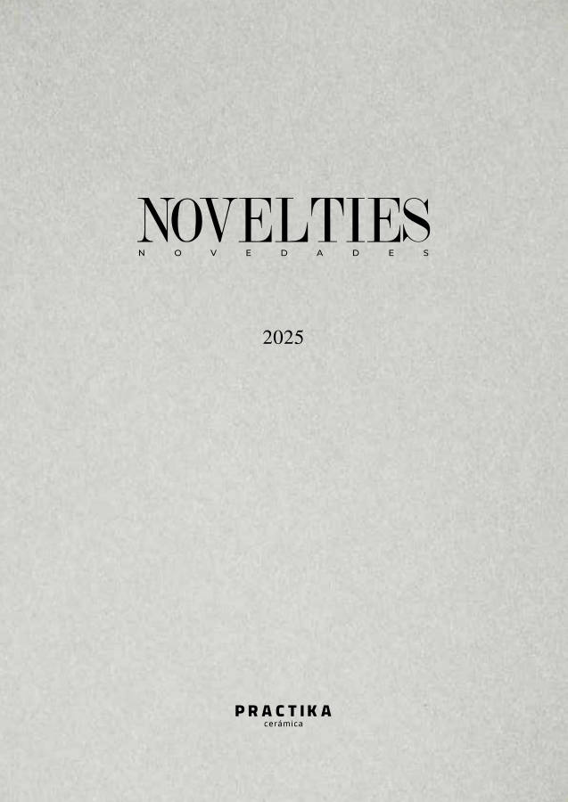
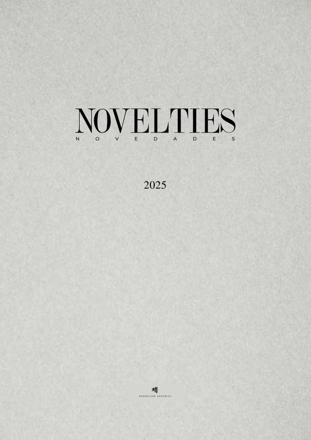
generales/catalogo-novedades-2025.pdf · pagina 130
series/atlas/atlas-panel-tecnico.pdf · pagina 1
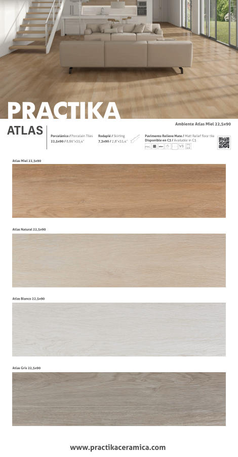
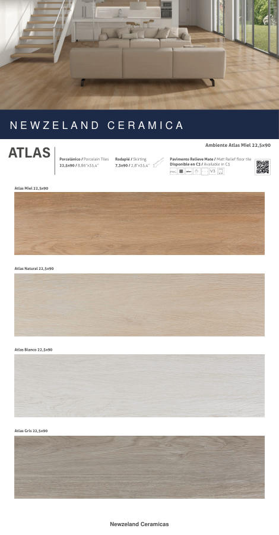
series/calacata/calacata-panel-tecnico.pdf · pagina 1
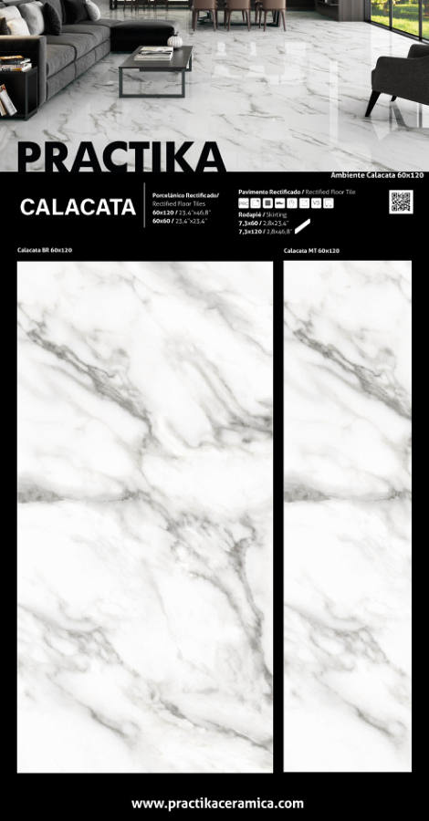
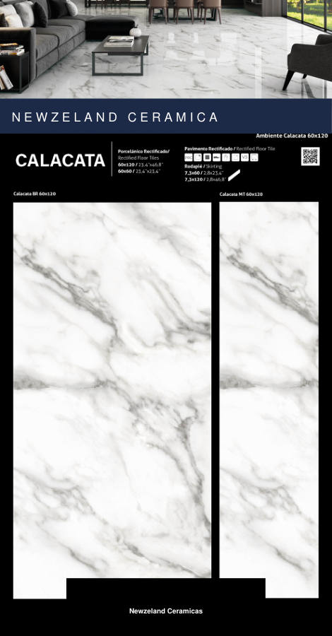
generales/paneles-tecnicos.pdf · pagina 7
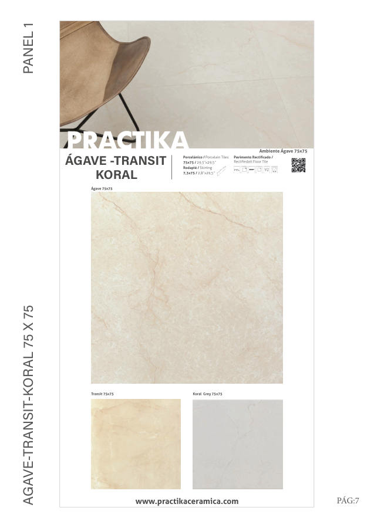
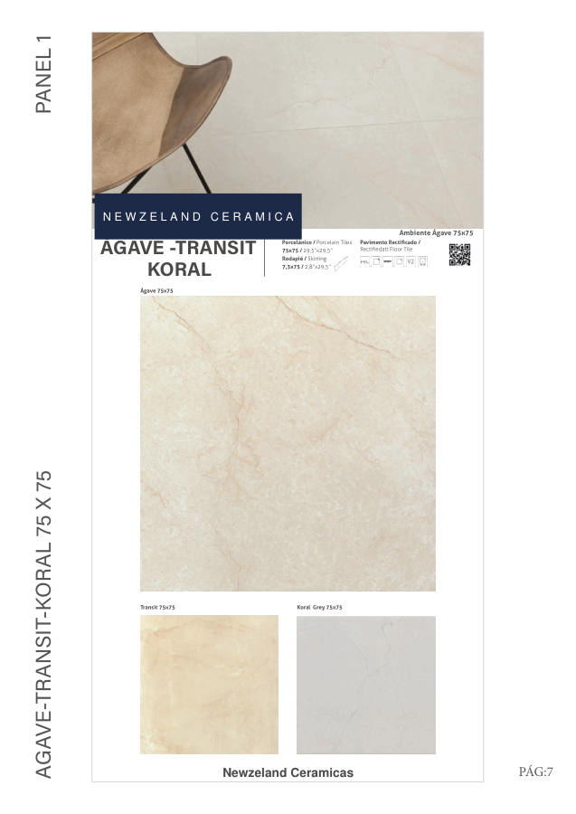
generales/paneles-tecnicos.pdf · pagina 30
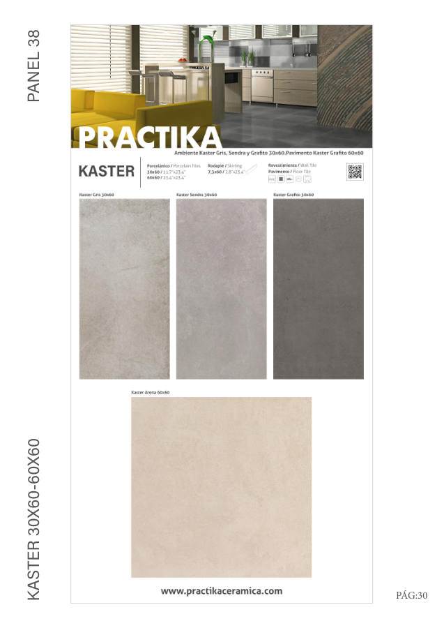
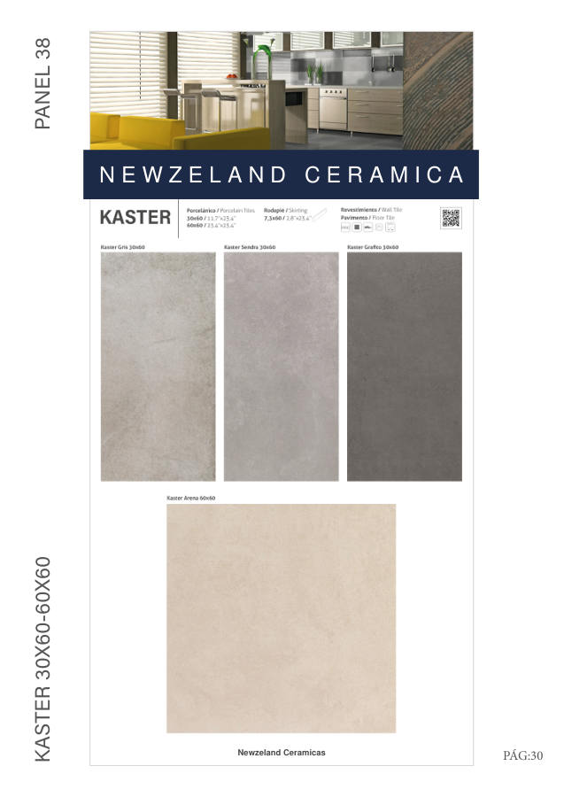
series/berna/berna-catalogo.pdf · pagina 1
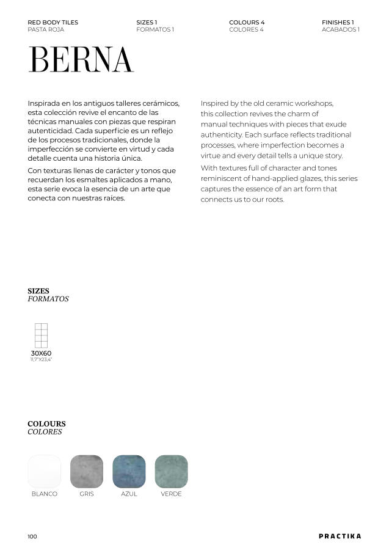
series/tokyo/tokyo-catalogo.pdf · pagina 2
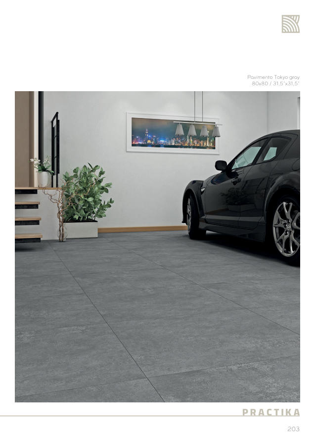
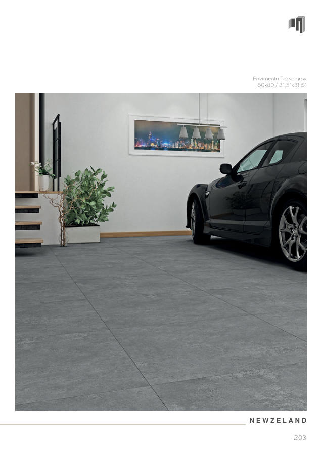
generales/area-tecnica.pdf · pagina 1
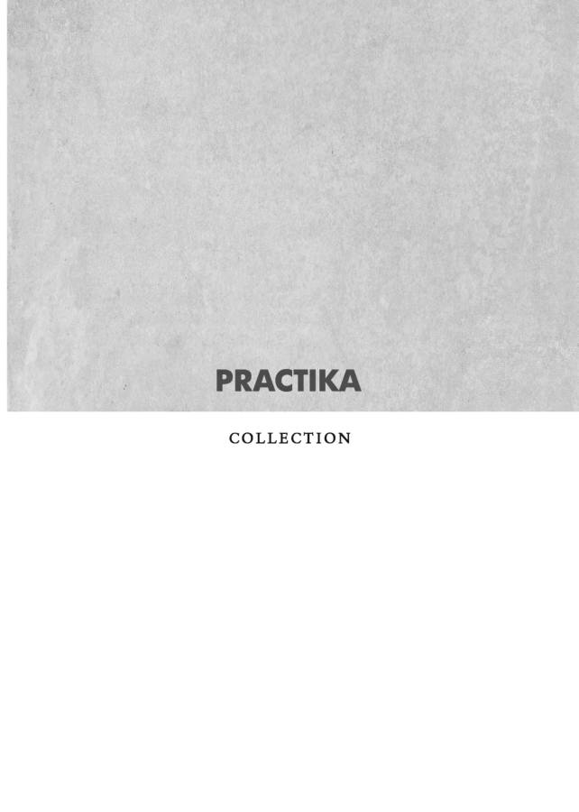
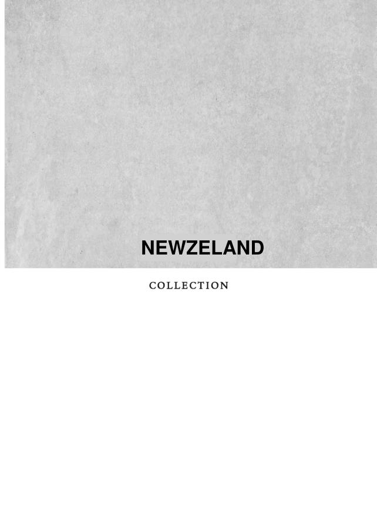
generales/declaracion-de-prestaciones-gres.pdf · pagina 1
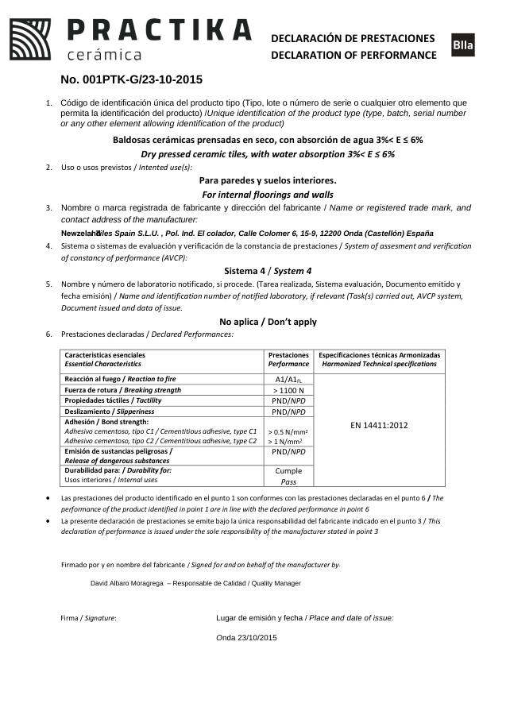